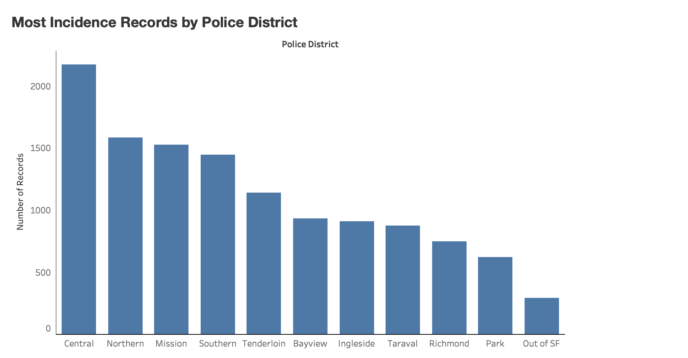

This is the number of police records based on police districts of December 2018.
I thought it'd be interesting to see which police areas of San Francisco has the most records, which would be in Central.
Data is from https://data.sfgov.org/Public-Safety/Police-Department-Incident-Reports-2018-to-Present/wg3w-h783
This is a bar chart that shows the number of records by day of week.
This shows what day of week has most incidents happen/record.
Data is from https://data.sfgov.org/Public-Safety/Police-Department-Incident-Reports-2018-to-Present/wg3w-h783
This line chart shows the number of vandalism incidents by day of week.
There are way more vandalism incidents than I thought so I thought it'd be interesting to see which day of week has the most vandalism incidents of December 2018.
Data is from https://data.sfgov.org/Public-Safety/Police-Department-Incident-Reports-2018-to-Present/wg3w-h783

| Done? | Letter | Justification |
|---|---|---|
| D | Tried my best to work with d3 and integrating my data charts. Ultimately couldn't get it done on time. | |
| C | ||
| B | ||
| A |
Any additional context you want to provide regarding functionality and grading can be included here. This may include any challenges or bugs you ran into that prevented you from implementing additional functionality.